Rigging
To move the avatar we need a skeleton that exerts influences on geometry. Rigging is what makes the animations posible.
The process in which you create the skeleton is called rigging (this process can be done in a lot of programs as long as you have conventions: blender, maya, 3d max, modo etc.). Many of these programs also have authoring solutions that are not perfect, but they will make your work easier.
The process in which you set the influence of the bones on the geometry is called skinning. To accomplish this process there are many programs with many plug-ins that have the role of facilitating the process. You will find more information in the Skinning chapter.
There are rules to be followed:
-
the Head and Eyes bones axis should be oriented with Z forward, Y horizontal, X vertical.
-
the Eyes bone Z axis should pass through the middle of the pupil. In Animaze Editor the avatar will look directly into the camera.
-
the Camera bone will be created separated from the avatar rigging (without being subordinated to another bone in the hierarchy), you should name it Camera and its orientation must be with Z towards the avatar (placed facing the avatar). So the head and eyes of the avatar will be oriented to the Camera and the Camera to them, as in the pic below.
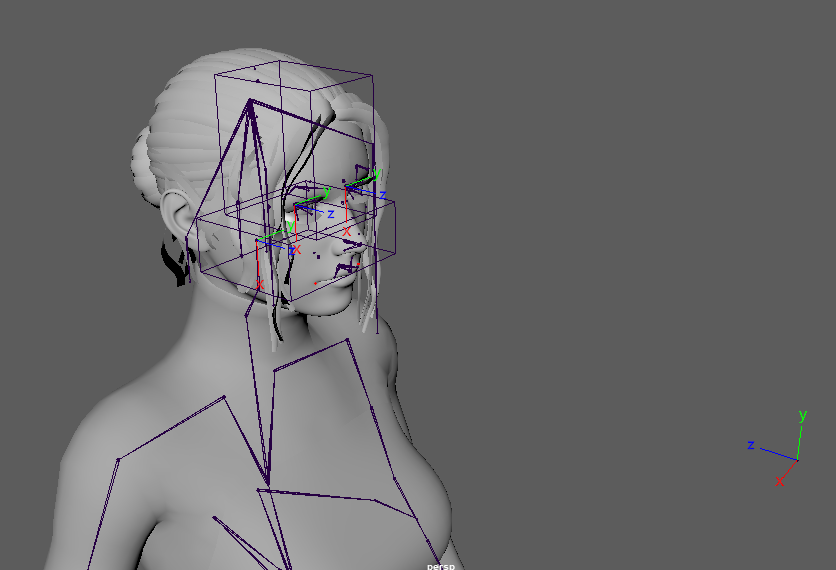
- in the end you have to use the function Freeze transform to all bones.
- the look-at-camera function is using the following bones: Camera, BipHead, BipLEye and BipREye. If they are not named like this, the system will not be able to identify and use them, so the avatar will not work properly.
The Camera bone must be exported:
- in the geometry *.fbx file of the avatar (avatarExample.fbx)
- in the idle1 animation. It must have an animation key
If the Camera bone is missing, then at import in Animaze Editor, the system will add a default camera facing the avatar.
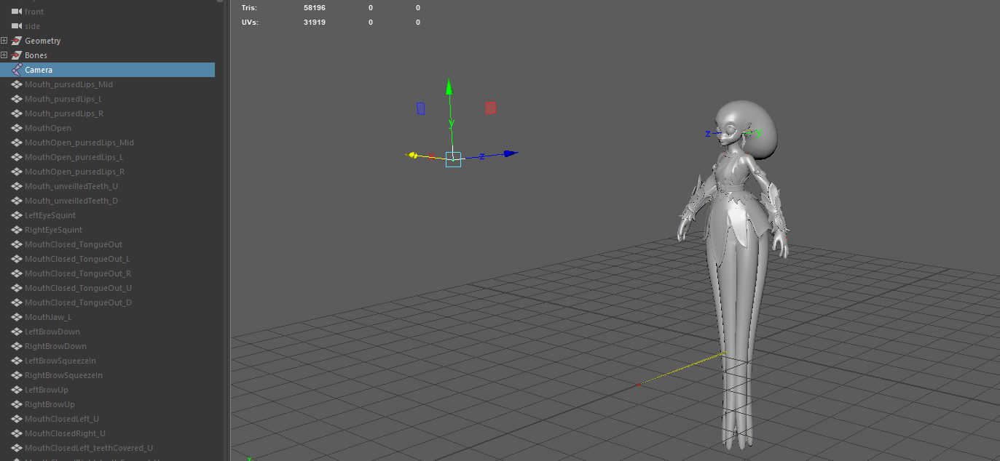
Build the rig
On this link we provide a simple humanoid rig, that you can use as a reference, or simply build your avatar on it, and adjust it according to your avatar design and needs. You can either delete or add bones. It contains prop bones as well, and the correct naming.
When building the rig, place a bone for each part of the avatar you want to move. Take the hand for example, you will need to place a bone for each segment of the hand: arm, forearm, palm and fingers.
The bone will be placed as far as possible in the center of the geometry. In the joints areas, try to keep more loops on the geometry, for smoother deformations.
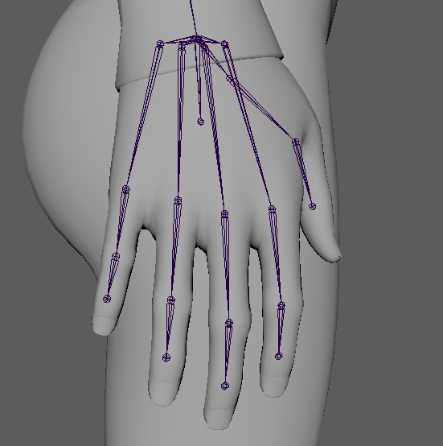
This aspect is valid for the hand and for the rest of the body, but for the face, things are slightly different. In the picture below, in Ardaly’s snout, you can see that the bones are closer to the margins, and not in the middle of the face’s geometry.
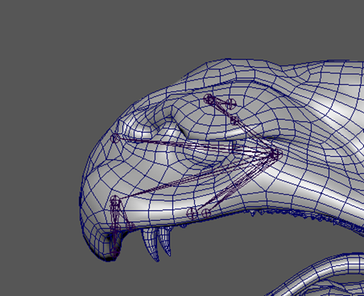
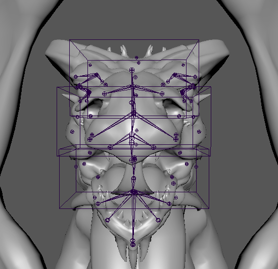
We won’t dive deeper in details for now, but if you want even more information for the rigging process we recommend you to watch tutorials for the program you use.
The rules to be followed for hands and future full-body tracking are:
1. Naming of the bones and their place in the hierarchy must be the ones proposed here. The bones name should start with Bip, the left side is: BipL and the right side is BipR.
For example you have Clavicle bone, you will name it BipLClavicle, and the counterpart BipRClavicle.
The below skeleton is a simple base one, you may add what other bones your model needs.
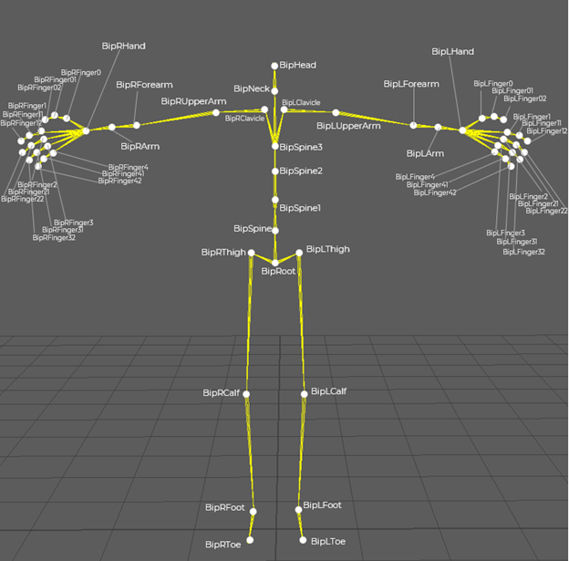
2. Bone axis orientation >> X axis oriented towards the child bone, Z forward and Y side.
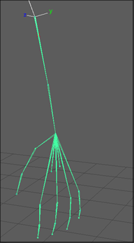
If the naming is different than proposed, then the system will not be able to recognize and use them. When this happens, we recommend using the Bone Mapping Configurator in Animaze Editor to solve it.
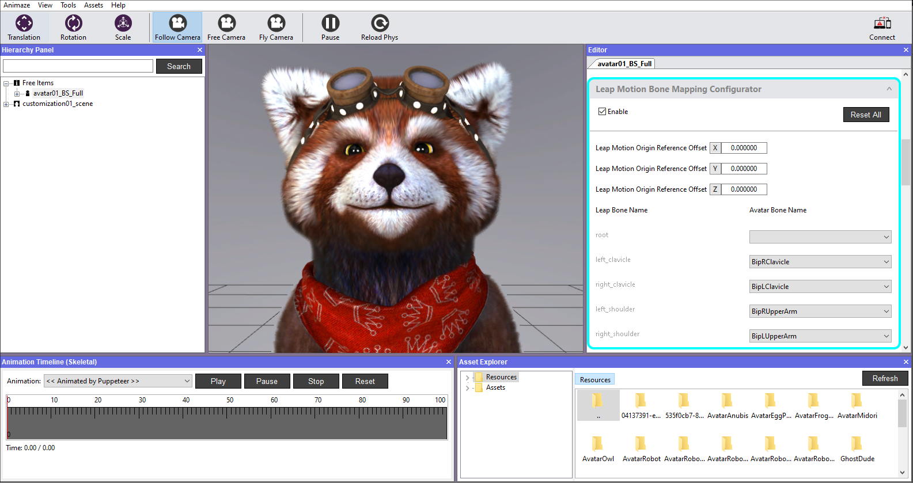
Prop bones
These bones are used to attach items (Props) on the avatars. Consider the following rules when adding them:
-
They must be exported only in the base animations. No other animation keys are needed.
- The name must contain the word Prop (e.g. BipHat_Prop)
-
The axis must convey as per the convention: Z forward, X horizontal, Y vertical.
Tips
If you use an automated rigging tool, you must pay extra attention to these points:
- bone axis orientation after working with the mirror function
- make sure to rename the bones as shown here, because they are used in functions such as look-at-camera, hands tracking and soon for full body tracking. When failing to do so, you can use the Leap Motion Bone Mapping Configurator within the Animaze Editor to rename them.
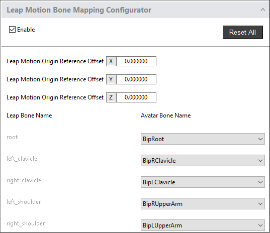
Bone orientation debugging
We are using Bruce the Shark to show you a simple debug-process flow for bone orientation in Animaze:
- in the source program you work, add an extra bone to your rig, easy to see/find in the avatar’s geometry, parented to the geometry, without any skinning/ influences over the geometry (you will use it just to determine the good orientation)
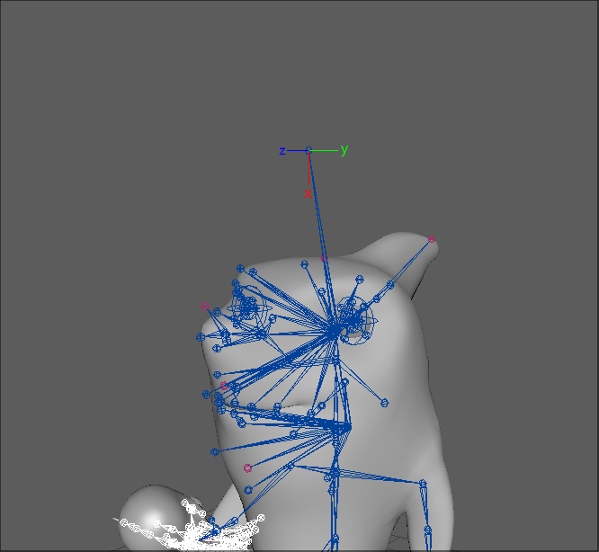
- orientate this bone (we used a faulty orientation in the pictures for the scope of the demo)...
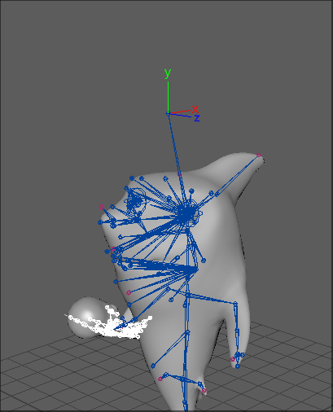
- export the *.fbx geometry and the idle1 animation, both containing this bone
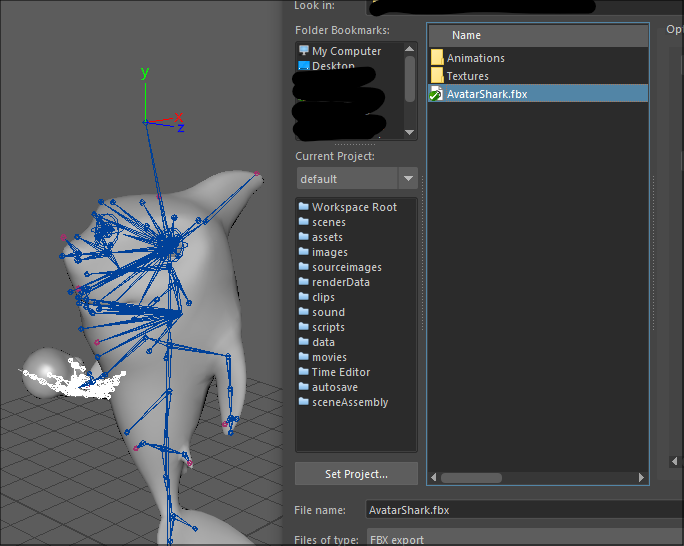
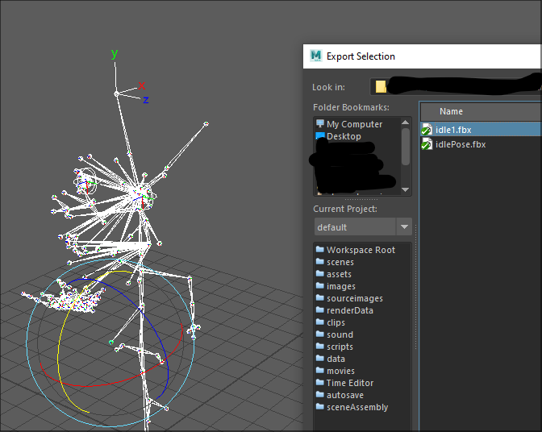
- now import these two files, the *.fbx and the idle1 animation, in the Animaze Editor the avatar (we checked out the Textures box, as we don’t need them for this debugging flow)
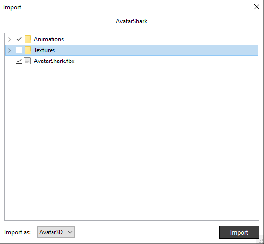
- in Animaze Editor go to Tools and select Debug Panel
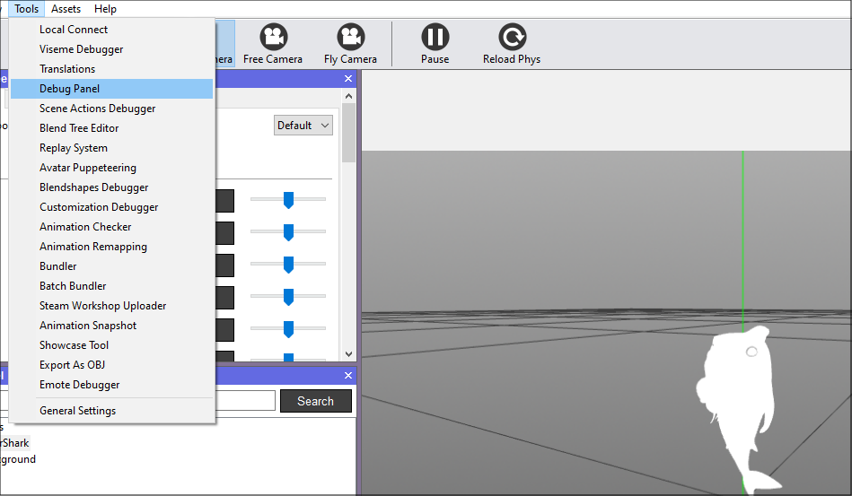
- tick the Draw Skeleton Hierarchy option and then check the added bone’s orientation in the Viewport.
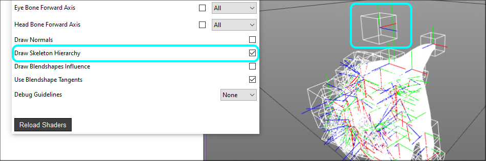
- notice your results and then change, if needed, the rest of the bones. Don’t forget to delete the one you added for debugging.